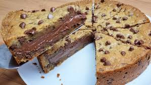

HOME
Torta de Cookie
Ingredientes

Massa:
180g de manteiga sem sal em ponto de pomada (não pode ser margarina)
180g de açúcar mascavo
50g de açúcar refinado ou cristal
2 ovos
350g de farinha de trigo
5g de bicarbonato de sódio (não pode ser fermento)
15ml de essência de baunilha
200g de gotas de chocolate forneáveis (usei ao leite Top da Harald)
Recheio:
500g de Nutella ou outro recheio de sua preferência